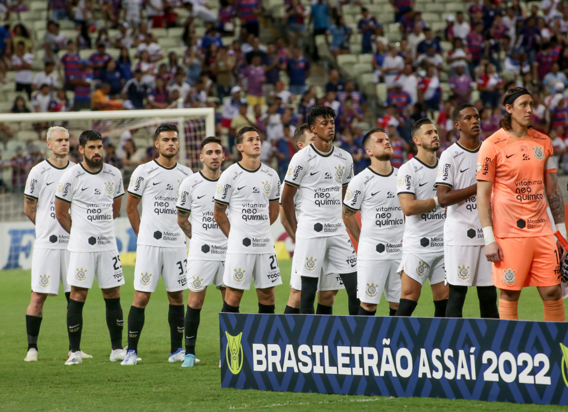

HINO

O PRIMEIRO HINO
"Salve o Corinthians, o campeão dos campeões". O hino do Corinthians nem sempre começou com esse famoso verso. Em 1930, a primeira composição dedicada ao clube era intitulada como uma "marchinha". Oferecido ao presidente Felipe Collona, que dirigiu o Timão entre 1929 e 1930, o primeiro hino da história foi gravado pela dupla Guarani e Pirajá. A música, escrita por La Rosa e letrada por Eduardo Dohmen, permanece eternizada pelo vocabulário e gênero musical típico.
Luctar… Luctar…
É nosso lema sempre, para a glória,
Jogar… Jogar…
E conquistar os louros da victória,
E proclamar, nosso pendão
É alvinegro e sempre há de brilhar,
Luctar, viril
Para a grandeza e glória do Brasil
Corinthians… Corinthians…
A glória será o teu repouso
E nós unidos sempre
Elevaremos teu nome glorioso.